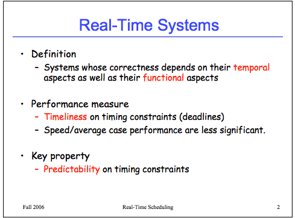

Real-time Scheduling of Dataflow Graphs
(link)
Dataflow models of computation
- Kahn process networks
- Dataflow process networks
- Dataflow synchronous languages
- Directed graph where computation nodes (actors) communicate via one-to-one FIFO buffers. Actor consumes predefined number of tokens from its input channels and produces a predefined number of tokens on its output channels (either constant or cyclically changing)
- Less expressive than the first two, but easy to model
- Expressive enough for most of digital signal processing (DSP)
- Both whether the system can be executed with bounded buffers and whether each actor can fire infinitely often are decidable. Can easily construct static-periodic schedules (i.e., infinite repetitions of firing sequences of actors)
Other models
Assumptions
- Periodic (i.e., sample at regular intervals)
- Embedded (i.e., integrates software with hardware to accomplish some dedicated function subject to physical constraints)
- Reactive (i.e., maintains permanent interaction with environment); all reactive systems are embedded systems, but not vice versa
- Relies on real-time operating system
Notes on real-time operating systems
link wiki
